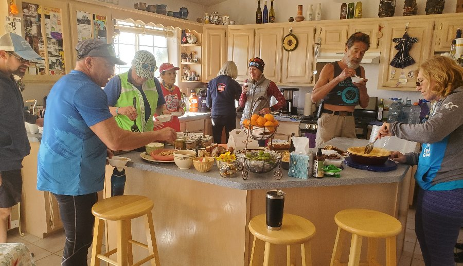

Berta Fun Run
Background
This was the final event in the >>Albuquerque Road Runners FreeforAll series. I accidentally missed the first event due to forgetting to put it on my calendar. I ran with John Farrow as a partner in Relay RePlay, the second event. I chose not to run the third event, Pi(e) Day. It was on a Tuesday evening and I couldn't get myself out the door.
This is the fifteenth Berta Run. The run is named after the street that KK, the hostess lives on. Each year the course is a bit different, but it's in Edgewood NM, so most of the course is going to be about 7,000 feet above sea level and there will be hills.
Race Day
Other than a few usual suspects, I didn't really know who all would attend. I was happy to see my friend Spencer there. He had to cancel out of Shenanigains at the last minute, so it's been a while since I saw him. Turns out, he kept me honest and I, he.
Since this is a Road Runner event, I wore my ARR crop-top pre-run, but took it off for the race itself. Yay! I remembered something. It wasn't until after we were running that I realized that I had forgotten to take my pre-race double espresso. Oh well.
Spencer and I took the lead within the first mile. He's light on his feet and would get ahead of me on the uphills, then I'd pass him on the downhills. Uh oh. This is going to be an actual race, where if I push myself fairly hard I have a chance of winning, but if I don't, it'll be another second.
Although the course was explained to me, and I had a map, I wanted to turn where the course didn't go and then almost missed a turn. Luckily, Spencer let me know when I was about to go off course. I also wasn't completely sure where all the hills would be, nor the total distance of the course, so when it looked like I was on the final downhill, I cranked up my pace until my HR was at around 160 and did seven tenths of a mile in 4:18, a 6:09 pace. I did not want Spencer catching me in the final stretch (which turned out to be a .3 mile uphill).
According to my GPS watch, there was 541 feet of gain, I averaged an 8:22 min/mile pace, with an average heart rate of 146 bpm, with my best mile being 7:03. Strava's numbers are similar.
Food

The post race spread was glorious, most of which was homemade by KK, although Perky and Prince Charming brought a vegan cherry pie. Here's what I remember I ate (all vegan): tomato and veggie casserole, bean stew, slice of cherry pie, overnight oats with tiramisu-like topping, chips and salsa, grapes, mixed nuts and gummy candy. There was also beer and mimosas—but it's not June 25th yet—and plenty of non-vegan food, apple juice, coffee, etc.
Gratitude
I'm very lucky to have found the Albuquerque Road Runners. If you're in (or visiting) Albuquerque, check them out.